| Lukas Van Daele | ||||||
| Level Designer | Projects | Resume | ||||
| van.daele.lukas@gmail.com | ||||||
| Mirror's Edge Catalyst | ||
| 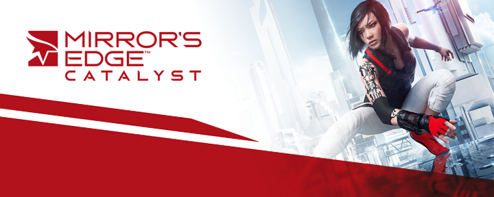 | ||
| I worked on this game from its very inception in 2012 all the way to shipping it in 2016. My responsibilities were designing the first district of the game (Downtown), some main and side missions, all gridnodes and lastly the challenges in the Downtown district like Dashes and Billboard hacks. Whenever it was necessary we also helped each other out therefore there's more areas in the game that I've helped with but I will focus on the key areas I shaped. I was staffed as a Level Designer & scripter and my work ranged from conceptual prototypes, to shaping and propdressing the environments and scripting the levels and gameplay. Working on this game has been very rewarding for me considering how much I like the Mirror's Edge franchise and I'm very proud of the work we've achieved as a team! | ||
!!!DISCLAIMER!!! THERE ARE STORY SPOILERS BELOW FOR MIRROR'S EDGE CATALYST! |
||
MAIN MISSION - BACK IN THE GAME |
||
| Back in the game is the first infiltration mission of the game after you've learned the ropes in the tutorials. You're to find your way to the Agriculture department of Elysium Labs and steal an enzyme for a rival company. The office & lab areas are typical Mirror's Edge puzzle environments where you're supposed to find your way up and through the building through various movement puzzles. (SPOILERS) There are some breather areas in between to set up the story and it ends with you triggering the alarm and fighting your way out while being chased by guards & choppers while glass is breaking all around you! | ||
| 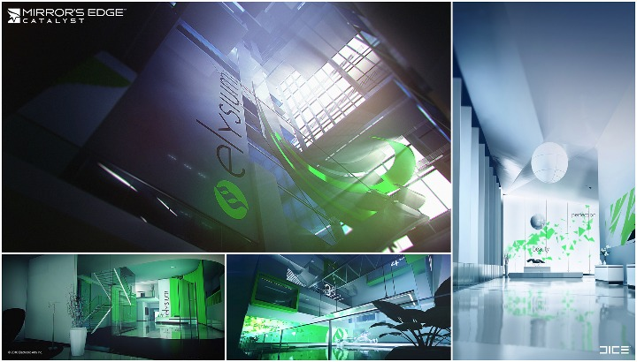 | ||
MAIN MISSION - FLY TRAP |
||
| This mission starts pretty low profile with Faith being tasked to figure out what happened to Icarus, a fellow Runner. You find out he's been trapped behind an electrified fence and are tasked to free him by following the power line all the way to the street level. Since Mirror's Edge mainly takes place on rooftops this is in stark contrast to the rest of the game and focuses on movement going downwards. (SPOILERS) When you are on your way back up you find out the Lair is being raided by KrugerSec forces in your absence, upon arrival you notice you're too late and everyone's gone except for some leftover Kruger Sec squad. You take them out in an arena like combat area, wave after wave and it ends with you being chased by a HunterDrone. The Drone is pretty fast and lethal so mastery of the environment and your abilities is crucial to escaping it. | ||
| 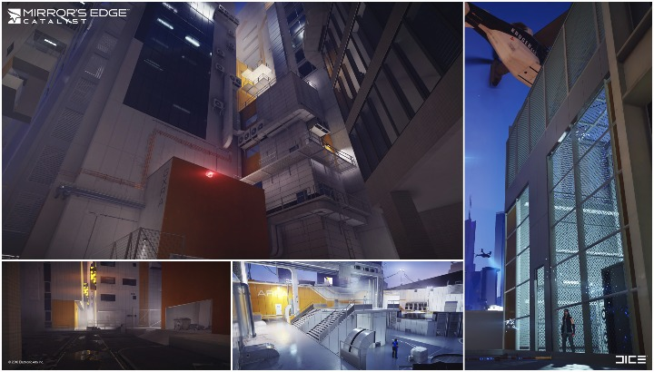 | ||
| 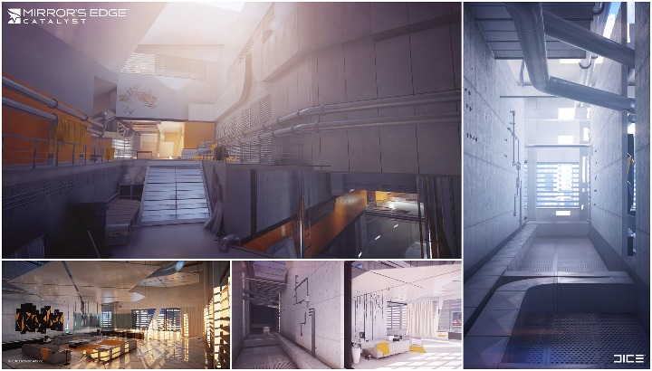 | ||
CHALLENGE MISSION - GRIDNODES (ANCHOR - DOWNTOWN - REZONING - THE VIEW) |
||
| There
are 4 Gridnode challenges in the game, 1 for each district. They are
vertical puzzle areas where movement and agility are key. A Gridnode is
some sort of data center where server blocks are pushed in and outside
of their racks which creates platforms for you to jump on, there are
also laser beams that you have to avoid, failure to do so will call in a
backup unit that you'll have to fight before hacking the terminal at
the top. After you've hacked the terminal you unlock Fast Travel in the
district.
Each Gridnode has some differences that makes it stand out from the rest both visually and from a gameplay perspective, the challenge also becomes more difficult as the game progresses. ANCHOR is the first gridnode and introduces the mechanics, the blocks are stationary and the challenge is fairly mild. DOWNTOWN has 2 cores (the center pillar you see in the image below), you have to hack 2 terminals to progress and there is a heavy focus on swingbars. REZONING is the gridnode that is under construction, it requires you to use the magRope "pull out" function, which allows you to create your own path throughout the challenge. There are various blocks that move dynamically so timing is key here. THE VIEW is the longest gridnode and serves as the ultimate one that requires you to use all of your learned abilities. There is now an added challenge to the blocks you pull out as they retract after a couple of seconds so there is a bigger focus on speed and perfection to make it through this one. |
||
| 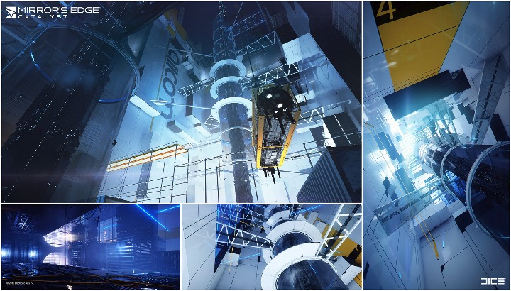 | ||
SIDE MISSION - DRONE WORKS |
||
| This is a continuation of a mission chain, now that you had a look at the documents you stole from a KrugerSec employee's apartment (Break & Entry mission) you learned there's a new Sensor Chip for surveillance drones in the works. This new tech spells trouble, you are to retrieve it. This is a typical infiltration mission but with a twist at the end, (SPOILERS) instead of being able to retrieve the chip from the drone it takes off instead and you are to follow it throughout the city until it crash lands and you can pick it up. So this mission is part infiltration gameplay and part race. | ||
| 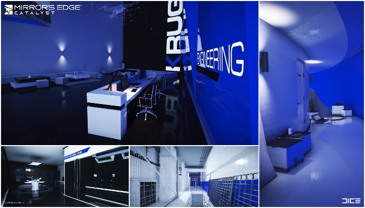 | ||
SIDE MISSION - PIGEONS DOWN |
||
| Your goal is to find 2 lost messenger pigeons for Birdman, you are to locate their beacons and retrieve the message capsules so they don't fall into the wrong hands. This is a slower free-roaming mission that focuses on navigation through the form of an audio & movement puzzle. You are supposed to listen to the frequency of the "bleeps" as well as their direction to find the source. Once you find the source you usually have to find your way around in the form of a small movement puzzle. | ||
DISTRICT - DOWNTOWN |
||
| I was responsible for the layout & flow of the district and prototyped all of the gameplay sections, from the bigger blocks to the placement of each individual pipe or box you use for gameplay purposes. At various stages we had art passes and it was my responsibility to maintain the gameplay vision of the district and coordinate with the various talented artists that worked on Downtown. Besides raw gameplay I've also put in a lot of effort to make the art stand out and helped propdress wherever I could. | ||
| 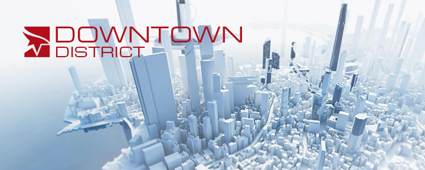 | ||
| CENTURIAN YARDS & CONCORD PLAZA make up the first free-roaming sections of the game. There is a heavy focus on accessibility and it's mainly used to teach the player the movement & navigation in a risk free environment. This section is in an entertainment area and focuses on tight and busy back areas to open sections where you can see the bigger streets where people go to shop. | ||
| 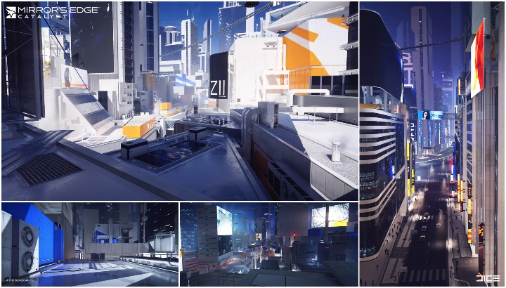 | ||
| 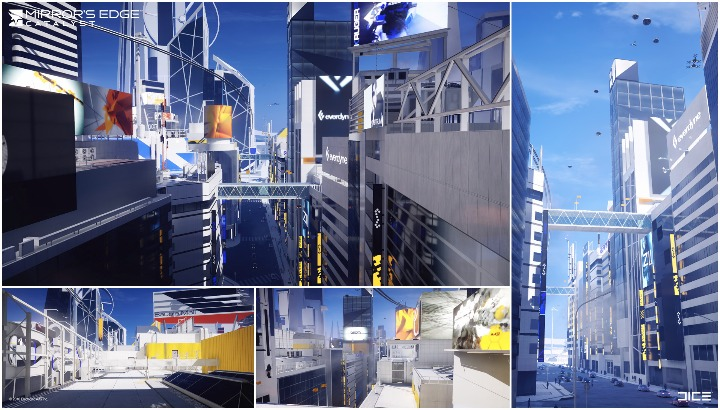 | ||
| TRIUMVIRATE DRIVE is the 2nd unlock stage of the city and open up quite a hefty chunk of the map. The focus of the area is on some bigger buildings and some industrial sections on the rooftops. There are various magRope shortcuts so you are teased into coming back to open up the whole section so you can blast through it at full speed. | ||
| 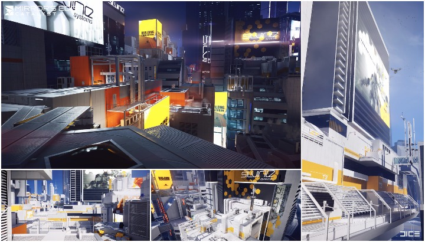 | ||
| 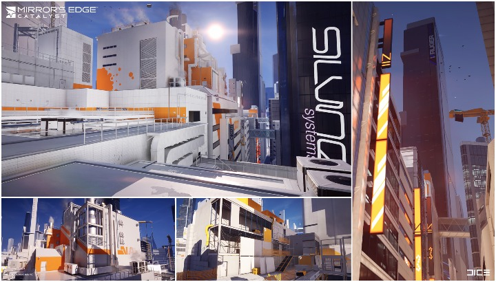 | ||
| 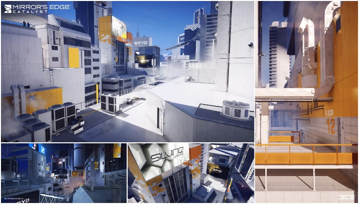 | ||
| 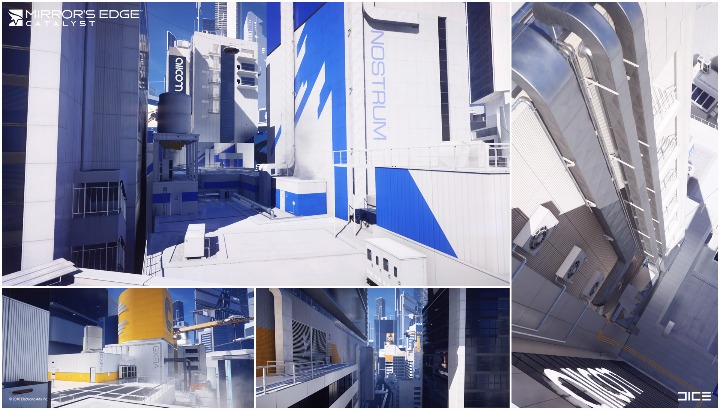 | ||
| Thank you for checking out my involvement on this project! :) | ||
| http://www.mirrorsedge.com/ | ||
| © 2016 EA DIGITAL ILLUSIONS CE AB. All other trademarks are the properties of their respective owners. | ||
| (c) Lukas Van Daele | ||